I believed I needed to figure out which attributes contribute the most to a dataset before diving into data exploration. It determines the significance of each attribute in a dataset. So, in the beginning, I had 85 attributes in my dataset. I came up with 39 of the most crucial characteristics. The top 39 traits are plotted against their importance scores in the diagram above.
Exploratory Data Analysis Of Dataset
Paneri Patel
Dataset
Malware remains a well-organized, well-funded market dedicated to
circumventing standard security solutions. Once a computer has been
infected with malware, thieves can use it to harm consumers and
businesses in a variety of ways.
Microsoft, which has over one
billion commercial and consumer customers, takes security very
seriously and is heavily involved in enhancing it.
Microsoft is
challenging the data science community to develop algorithms to
anticipate if a system will be infected with malware in the near
future as part of their larger goal. Microsoft is giving Kagglers with
an unparalleled malware dataset, similar to their earlier Malware
Challenge, to stimulate open-source advancement on effective
approaches for predicting malware occurrences.
The data is available online at: https://www.kaggle.com/c/microsoft-malware-prediction/data
Initial Analysis Questions
- Which Microsoft product is most prone to malware attacks?
- Does installing antivirus products helps to prevent malware attacks?
- Do we need firewall or just Antivirus products are sufficient to prevent malware attacks?
- Does SmartScreen type plays any role in getting malware attacks?
Discoveries and Insights
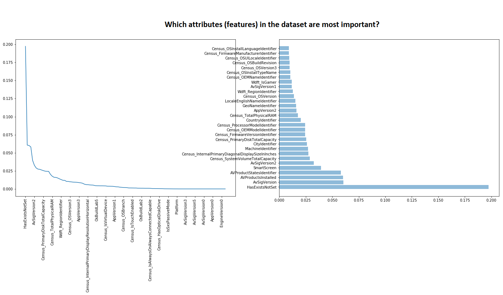
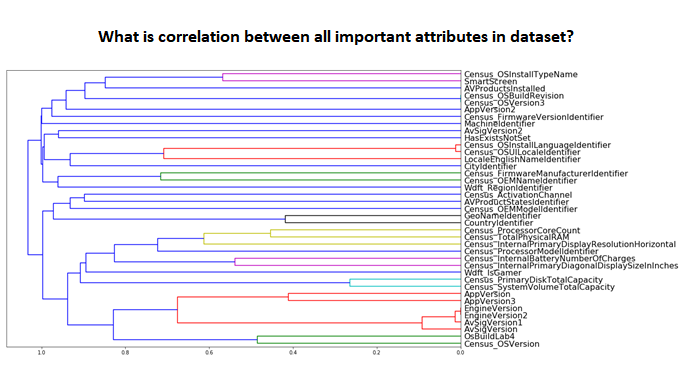
The graphic above depicts how qualities are related to one another. It depicts correlations between features that can be used for further exploration.
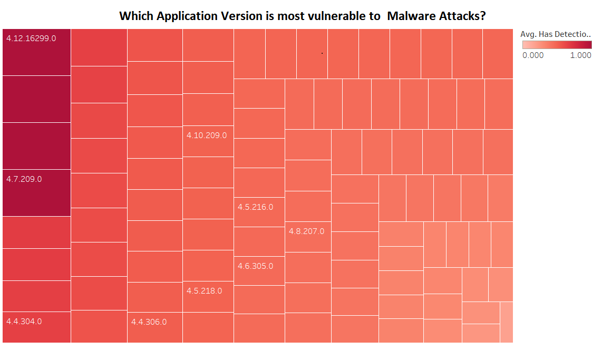
Even if they are protected, this visualization indicates which Microsoft Application versions are most vulnerable to Malware attacks. The average of malware detections is shown by the application version, color, and size. AppVersion assigns labels to the marks. IsProtected is used to filter data.
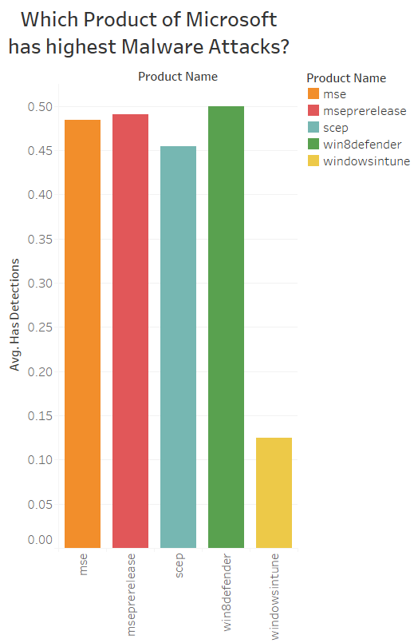
For each product name, the average of HasDetections is shown in the image above. The color represents information about the product name. The data is filtered using the Firewall's average, which only preserves non-null values.
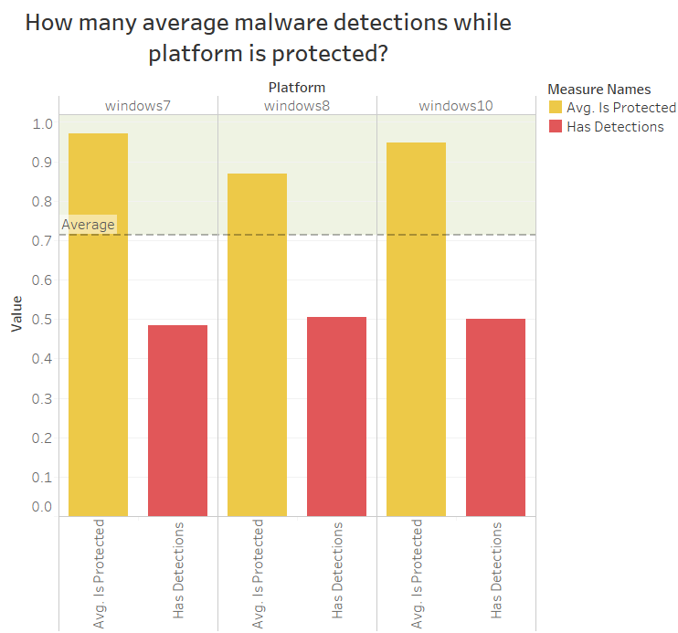
This graph shows the mean malware detection and protection for each Platform. Avg HasDetections & Avg IsProtected are highlighted in color.
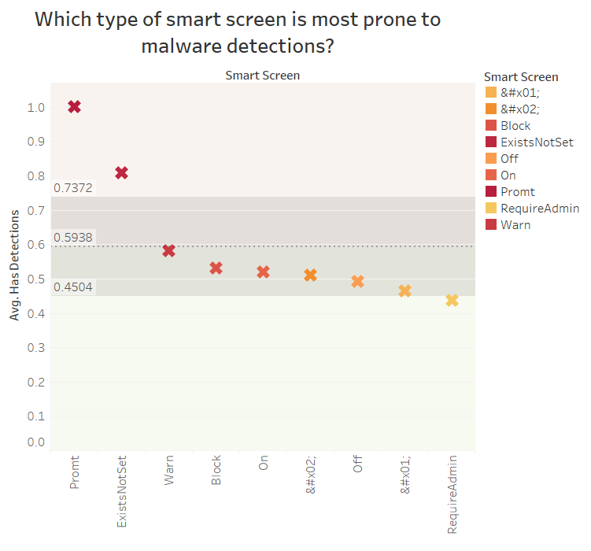
I wanted to know how SmartScreen is related to malware detection because it was one of the major attributes I discovered through data wrangling. The average number of HasDetections for each Smart Screen is shown in the image. SmartScreen's details are shown in color. SmartScreen has been used to filter out Null values from the view.
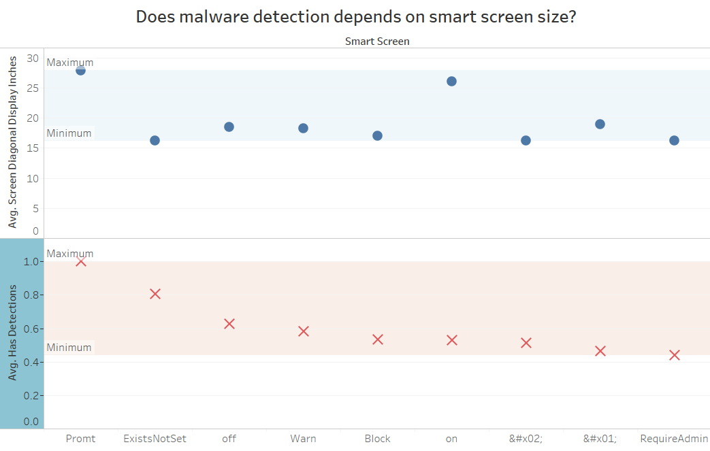
The view is filtered on SmartScreen, which excludes Null values, based on the average of ScreenSize and HasDetections for each SmartScreen. We can deduce from the above image that the larger the SmartScreen, the more malware attacks there will be.
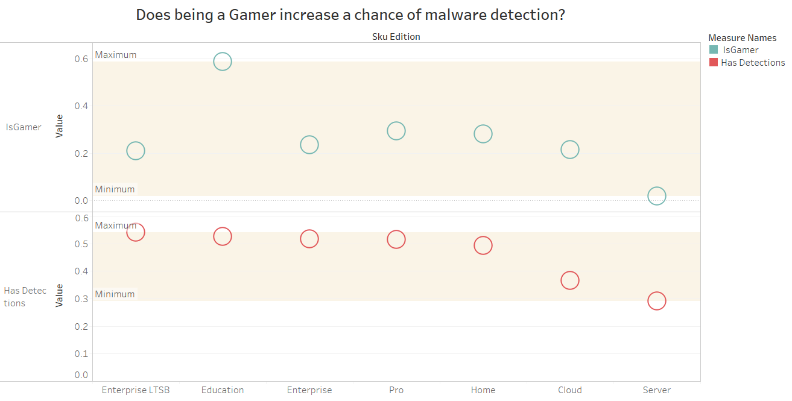
Each Sku Edition's IsGamer and Has Detections are shown in the image. The color scheme reveals information regarding IsGamer and Has Detections. Sku Edition has been used to filter the view, which excludes Invalid. We can see that being a gamer has a high risk of malware attack if we eliminate specific outliers like the Education edition.
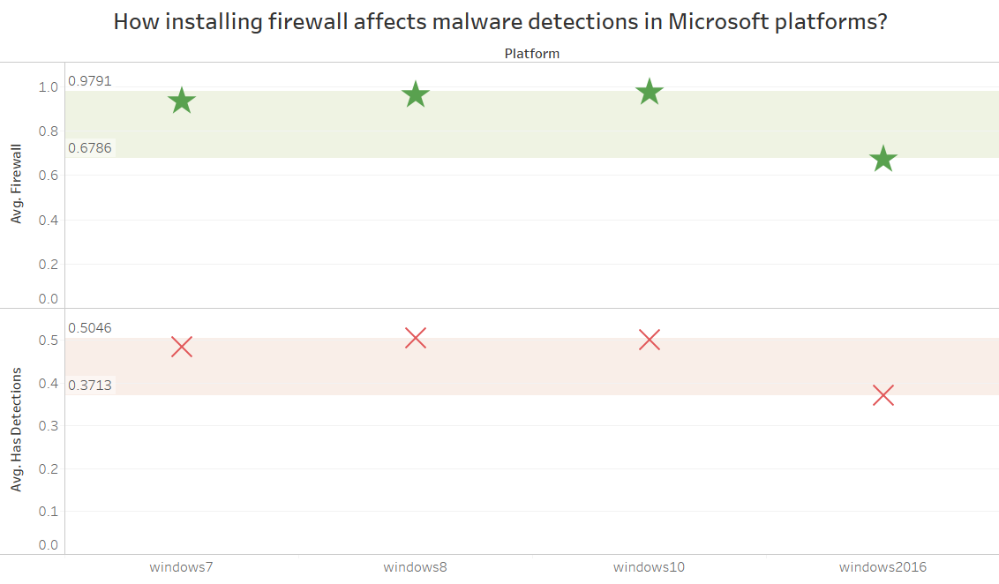
Installing a firewall does not help with malware threats in the sku edition, as seen in the image. This revelation may come as a shock because most people believe that a firewall protects their system against malware attacks. For each Platform, the average Firewall and average HasDetections are displayed. On Microsoft Editions, the data is filtered.
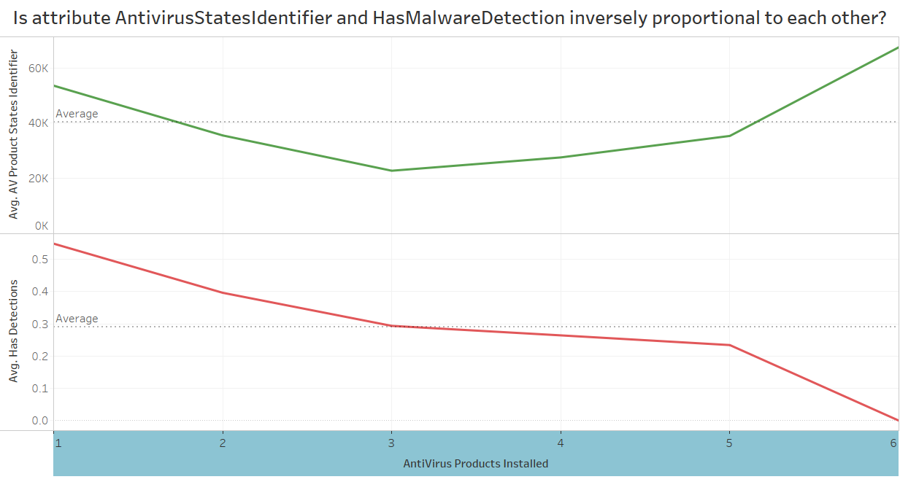
Affirmative, the answer to the above question is yes, because the greater the number of AntiVirus ProductStatesIdentifier, the lower the number of Malware Detections. For the number of AntiVirus Products Installed, the average of AntiVirus ProductStatesIdentifier and the average of HasDetections. AntiVirusProductStatesIdentifier is used to filter the view, which only keeps non-Null values.
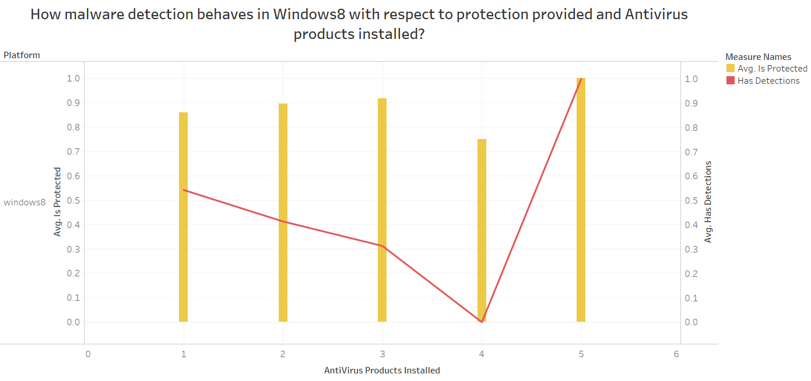
We know that of all Microsoft platforms, Windows 8 had the greatest malware detection. As a result, I dug deeper into the Windows 8 platform. The Avg. IsProtected and HasDetections trends for AntiVirus Products Installed by Platform. Avg. IsProtected and HasDetections are highlighted in color. Platform and AntiVirus Products Installed filter the results. We can't really tell what makes Windows 8 so vulnerable to malware assaults based on the above image. Furthermore, malware attacks were highest when the most Antivirus solutions were installed. That means there's a probability that if we go deeper into the 5 Antivirus products in Windows 8, we'll find some more concrete results.
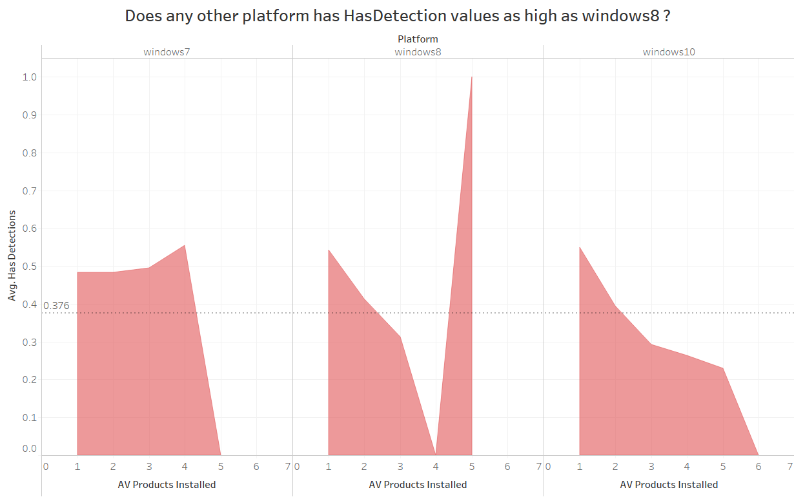
The average of Has Detections for AV Products Installed for each Platform is plotted. The view is limited to non-Null values due to the AV Products Installed filter.
Summary
This aided me in gaining some concrete insights from my dataset. When working with enormous datasets, Pandas libraries are extremely useful and quick. I discovered some fascinating information and connections that can aid me in my research. The most relevant attributes for exploring HasDetections in this dataset are IsProtected, SmartScreen, SmartScreenSize, AntiVirusProducts, and Antivirus State Identifiers. Surprisingly, firewalls do not give much protection against infection.